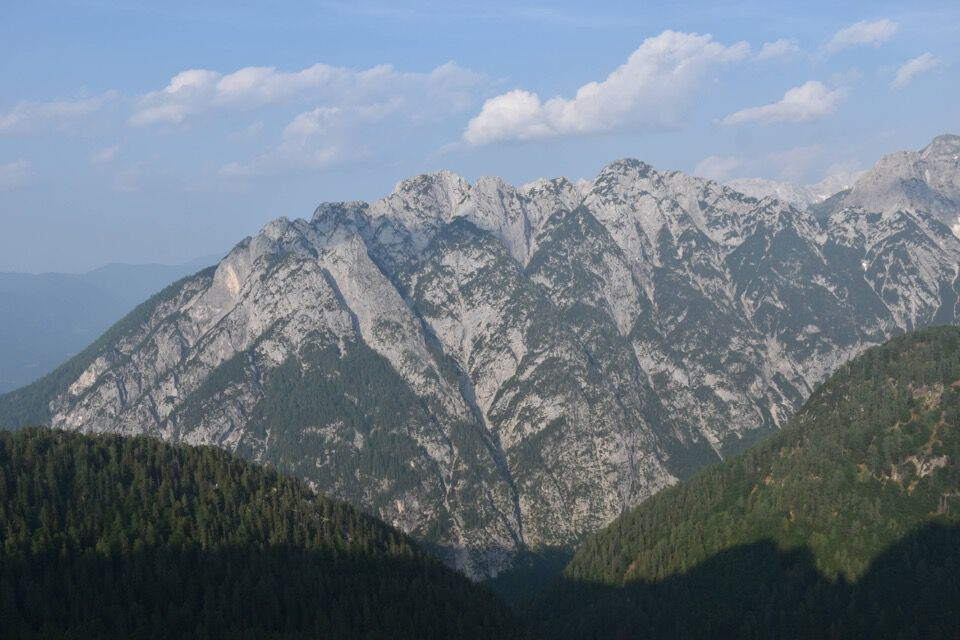

Nella «lotta con l'Alpe» bisogna guardare in faccia l'avversario, non attaccarlo alle spalle. E allora, partiti un pomeriggio io e il Riccardo da Raibl, via su dritti per dritti da Sud, sulle tracce dei camosci e di Pippi.
Salita di un'estetica per me irresistibile, un po' come le Pale de Ciuone da Sud per la val Ciolesàn. (*)
Una precedente esplorazione mi aveva svelato i segreti del monte.
Ma il tempo poco collaborativo mi fece desistere.
«Beh, ormai è giugno, aspetterò la fine dell'autunno». Ed eccoci qui, tre giorni dopo, alle due del pomeriggio, pronti all'attacco.
Ma ce la faremo?
Porca peppa che salto.
Il viaz dei camosci è qui un'opera d'arte.

Atu capît?

La via non è delle più facili.
«Senti Riccardo, cosa dici, taglio anche questi mughi qui? ... ma no dai, che si arrangino.»
«Ma che si arrangino chi? Tu la prossima volta?»
A tu per tu con la Prima Punta.
La Terza Punta: quasi quasi...
Dalla II° verso III° e IV°. La V° non è quella a sx!
I dirupi in versante Sud.
La Terza Punta.
L'ombra del monte copre l'Alpe di Rutte: sono le sei di sera.
Facciamo un salto anche sulla Prima Punta.
E ora via giù verso il Mosè.
Schöneck.
Anziché seguire la via che fan tutti, percorriamo quella descritta nella guida Marini-Galli, che ha minori difficoltà tecniche e traversa stando alti in direzione di Sella Alpel. Prima di traversare però bisogna calarsi in uno strettissimo canalino (corda penzolante).
Bravo Martin che ha tagliato un'infinità di mughi, sia verso Sella Alpel che verso Capanna Cinque Punte.
Bellissimo l'anfiteatro dell'Alpe di Rutte.
Ripeto che quella a sx, raggiungibile pure per la cresta mugosa visibile in foto, non è la V° Punta (che sta invece a Sud della IV°).
Sto morendo di sete, ma non importa: l'atmosfera della sera, che la foto cattura piuttosto malamente, mi riempe il cuore di tranquillità.
E ora giù da Sella della Malga verso Raibl.
La vera V° Punta, bellissima.
Fine: viva le escursioni pomeridian-serali.
(*) E scusate se faccio il prezioso, ma queste sono cose assolutamente troppo fragili e importanti per essere divulgate ai quattro venti, con tutti i brutti ceffi che ci sono là fuori. Chi divulga informazioni su luoghi selvaggi ha una enorme responsabilità: se vuoi informazioni chiedimele in privato.
Voglio che mi sia spiegato tutto o nulla. E la ragione è impotente di fronte a questo grido del cuore. Lo spirito, risvegliato da questa esigenza, cerca e non trova che contraddizioni e sragionamenti. Ciò che io non comprendo è senza ragione. Il mondo è popolato da questi irrazionali, ed esso stesso, di cui non comprendo il significato unico, non è che un immenso irrazionale. [...] L'uomo si trova davanti all'irrazionale e sente in sé un desiderio di felicità e di ragione. L'assurdo nasce dal confronto fra il richiamo umano e il silenzio irragionevole del mondo.